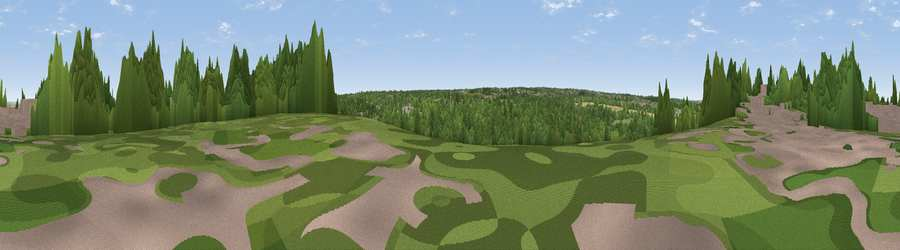

Viewpoint near Hale
#39737 in England · top 61% of its area beats it · near HaleWhere it is
The exact computed spot (TQ 78975 65725). Click the marker for map links.
The view, rendered

A 360° render of this exact spot computed from the terrain model, tree cover and land cover — summer colours, afternoon light, calibrated against photographs of famous viewpoints. Real trees, hedges and buildings will differ in detail.
The panorama
Grey silhouette: terrain skyline in each direction (720 bearings, Earth curvature and refraction included). Dashed green: skyline with trees (+15 m) and buildings (+8 m) as obstacles. Blue strip: how far the ground is visible on each bearing.
Where the view opens
Wedge length = distance to the farthest visible ground on that bearing (vegetation-aware). Rings at 10, 25 and 50 km.
What fills the view
36% woodland · 35% cropland · 16% built-up · 8% grassland · 4% water
Angular shares of the visible panorama (visual magnitude), not map area. Landscape diversity 0.60 (0–1 Shannon).
Key numbers
More beautiful places nearby
The staircase of upgrades: each row has a higher view potential than everything closer. Driving times are estimates from straight-line distance, calibrated against real road routing — check an actual route before setting out.
| Place | Direction | Drive | Score |
|---|---|---|---|
| Viewpoint near Hale | NW · 2 km | ~4 min | 28.8 |
| Viewpoint near Borstal | W · 6 km | ~12 min | 33.1 |
| Viewpoint near Bluebell Hill | SW · 6 km | ~13 min | 60.9 |
| Viewpoint near Detling | S · 7 km | ~14 min | 62.5 |
| Viewpoint near Thurnham | S · 8 km | ~16 min | 63.2 |
| Viewpoint near Thurnham | SSE · 9 km | ~17 min | 63.4 |
| Viewpoint near Birling | WSW · 12 km | ~23 min | 65.1 |
| Viewpoint near Charing | SE · 22 km | ~36 min | 68.6 |
51.36239, 0.56941 · source: screening · position refined by local search. Computed location — check access rights before visiting.